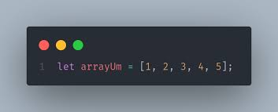

Vamos relembrar alguns tópicos importantes sobre Arrays
book_2 Conceitos
exercise Exercícios de Fixação
engineering Projeto Prático
Em JavaScript, um array é uma estrutura de dados que armazena uma coleção ordenada de elementos, que podem ser de qualquer tipo (números, strings, objetos, funções, etc.). Arrays são usados para organizar e manipular dados de forma eficiente, permitindo acesso aos elementos por meio de índices numéricos (começando do 0).

// Criando um array vazio
let vazio = [];
// Criando um array de números
let numeros = [1, 2, 3, 4, 5];
// Criando um array de strings
let frutas = ["banana", "laranja", "maca"];
// Criando um array misto
let misto = [42, "texto", true, null];
Objetivo: Você consegue criar um array com alguns dados de pessoas (nomes, idades, cidades, etc.), ou seja, um array composto de outros arrays?
let pessoas = [
["João", 30, "São Paulo"],
["Maria", 25, "Rio de Janeiro"],
["Pedro", 40, "Belo Horizonte"]
];
A propriedade length retorna o número de elementos presentes
no array.
let numeros = [10, 20, 30, 40, 50];
console.log(numeros.length); // 5
let vazio = [];
console.log(vazio.length); // 0
// Usando length em condições
if (numeros.length > 0) {
console.log("O array contém elementos");
} else {
console.log("O array está vazio");
}
// ** Inserindo elementos no final do array (push):**
let numeros = [1, 2, 3];
numeros.push(4);
console.log(numeros); // [1, 2, 3, 4]
numeros.push(5, 6);
console.log(numeros); // [1, 2, 3, 4, 5, 6]
// ** Inserindo elementos no início do array (unshift):**
let cores = ["verde", "azul"];
cores.unshift("vermelho");
console.log(cores); // ["vermelho", "verde", "azul"]
// ** Removendo elementos do final do array (pop):**
let frutas = ["maçã", "banana", "laranja"];
let removida = frutas.pop();
console.log(removida); // "laranja"
console.log(frutas); // ["maçã", "banana"]
// ** Removendo elementos do início do array (shift):**
let animais = ["gato", "cachorro", "coelho"];
let primeiro = animais.shift();
console.log(primeiro); // "gato"
console.log(animais); // ["cachorro", "coelho"]
Objetivo: Crie um array vazio chamado fila . Adicione 'João', 'Maria' e 'Pedro' no final da fila. Depois, remova a primeira pessoa da fila e adicione 'Ana' no início. Qual o resultado final?
// Cria um array vazio
const fila = [ ];
// Adiciona pessoas no final
fila.push('João');
fila.push('Maria');
fila.push('Pedro');
console.log(fila); // ['João', 'Maria', 'Pedro']
// Remove o primeiro da fila
const removido = fila.shift( );
console.log(removido); // 'João'
// Adiciona Ana no início
fila.unshift('Ana');
console.log(fila); // ['Ana', 'Maria', 'Pedro']
O método splice() modifica o array original, podendo remover, adicionar ou substituir elementos.
array.splice(índiceInicial, quantidadeRemover, elemento1, elemento2, ...)
const animais = ['gato', 'cachorro', 'pássaro', 'peixe'];
// Remove 2 elementos a partir do índice 1
animais.splice(1, 2);
console.log(animais); // ['gato', 'peixe']
// Adiciona elementos no índice 1 sem remover nada
const frutas = ['maçã', 'laranja'];
frutas.splice(1, 0, 'banana', 'uva');
console.log(frutas); // ['maçã', 'banana', 'uva', 'laranja']
// Substitui elementos
const numeros = [1, 2, 3, 4, 5];
numeros.splice(2, 2, 10, 20);
console.log(numeros); // [1, 2, 10, 20, 5]
O método slice() retorna uma cópia de uma parte específica do array, sem modificar o array original.
array.slice(índiceInicial, índiceFinal)
const cores = ['vermelho', 'verde', 'azul', 'amarelo', 'roxo'];
const algumas = cores.slice(1, 3);
console.log(algumas); // ['verde', 'azul']
console.log(cores); // Array original permanece intacto
const ultimas = cores.slice(-2);
console.log(ultimas); // ['amarelo', 'roxo']
O método indexOf() retorna o índice da primeira ocorrência de um elemento no array, ou -1 se não encontrado.
const letras = ['a', 'b', 'c', 'b', 'd'];
console.log(letras.indexOf('b')); // 1
console.log(letras.indexOf('z')); // -1
// Pode começar a busca de um índice específico
console.log(letras.indexOf('b', 2)); // 3
O método includes() verifica se um array contém um determinado elemento, retornando true ou false.
const letras = ['a', 'b', 'c', 'b', 'd'];
console.log(letras.includes('b')); // true
console.log(letras.includes('z')); // false
const frutas = ['maçã', 'banana', 'laranja'];
console.log(frutas.includes('banana')); // true
console.log(frutas.includes('uva')); // false
Objetivo: Dado o array ['html', 'css', 'javascript', 'python', 'java'] , faça o seguinte:
const tecnologias = ['html', 'css', 'javascript', 'python', 'java'];
// 1. Cópia dos 3 primeiros
const primeiras = tecnologias.slice(0, 3);
console.log(primeiras); // ['html', 'css', 'javascript']
// 2. Verifica se python existe
const temPython = tecnologias.includes('python');
console.log(temPython); // true
// 3. Índice de javascript
const indiceJS = tecnologias.indexOf('javascript');
console.log(indiceJS); // 2
// 4. Remove python e adiciona typescript
const indicePython = tecnologias.indexOf('python');
tecnologias.splice(indicePython, 1, 'typescript');
console.log(tecnologias); // ['html', 'css', 'javascript', 'typescript', 'java']
A propriedade length retorna o número de elementos presentes
no array.
let numeros = [10, 20, 30, 40, 50];
console.log(numeros.length); // 5
let vazio = [];
console.log(vazio.length); // 0
// Usando length em condições
if (numeros.length > 0) {
console.log("O array contém elementos");
} else {
console.log("O array está vazio");
}
// ** Inserindo elementos no final do array (push):**
let numeros = [1, 2, 3];
numeros.push(4);
console.log(numeros); // [1, 2, 3, 4]
numeros.push(5, 6);
console.log(numeros); // [1, 2, 3, 4, 5, 6]
// ** Inserindo elementos no início do array (unshift):**
let cores = ["verde", "azul"];
cores.unshift("vermelho");
console.log(cores); // ["vermelho", "verde", "azul"]
// ** Removendo elementos do final do array (pop):**
let frutas = ["maçã", "banana", "laranja"];
let removida = frutas.pop();
console.log(removida); // "laranja"
console.log(frutas); // ["maçã", "banana"]
// ** Removendo elementos do início do array (shift):**
let animais = ["gato", "cachorro", "coelho"];
let primeiro = animais.shift();
console.log(primeiro); // "gato"
console.log(animais); // ["cachorro", "coelho"]
Objetivo: Crie um array vazio chamado fila . Adicione 'João', 'Maria' e 'Pedro' no final da fila. Depois, remova a primeira pessoa da fila e adicione 'Ana' no início. Qual o resultado final?
// Cria um array vazio
const fila = [ ];
// Adiciona pessoas no final
fila.push('João');
fila.push('Maria');
fila.push('Pedro');
console.log(fila); // ['João', 'Maria', 'Pedro']
// Remove o primeiro da fila
const removido = fila.shift( );
console.log(removido); // 'João'
// Adiciona Ana no início
fila.unshift('Ana');
console.log(fila); // ['Ana', 'Maria', 'Pedro']
O método forEach() executa uma função para cada elemento do array.Não retorna nada (undefined).
const letras = ['a', 'b', 'c', 'd'];
letras.forEach((letra, indice) => {
console.log(`Índice ${indice}: ${letra}`);
});
// Saída:
// Índice 0: a
// Índice 1: b
// Índice 2: c
// Índice 3: d
O método map() cria um novo array com os resultados da chamada de uma função para cada elemento do array original.
// Exemplo com numeros
const numeros = [1, 2, 3, 4];
const dobrados = numeros.map(num => num * 2);
console.log(dobrados); // [2, 4, 6, 8]
console.log(numeros); // [1, 2, 3, 4] - original intacto
// Exemplo com strings
const nomes = ['ana', 'joão', 'maria'];
const maiusculas = nomes.map(nome => nome.toUpperCase( ));
console.log(maiusculas); // ['ANA', 'JOÃO', 'MARIA']
O método filter() cria um novo array contendo apenas os elementos que passam em um teste (retornam true ).
// Exemplo com numeros
const numeros = [1, 2, 3, 4, 5, 6, 7, 8];
const pares = numeros.filter(num => num % 2 === 0);
console.log(pares); // [2, 4, 6, 8]
// Exemplo com objetos
const produtos = [
{ nome: 'Notebook', preco: 3000 },
{ nome: 'Mouse', preco: 50 },
{ nome: 'Teclado', preco: 200 }
];
const produtosCaros = produtos.filter(
produto => produto.preco > 1000
);
console.log(produtosCaros);
// [{ nome: 'Notebook', preco: 3000 }]
O método reduce() aplica uma função a um acumulador e a cada elemento do array (da esquerda para a direita) para reduzi-lo a um único valor.
array.reduce((acumulador, valorAtual) => { ... }, valorInicial)
const numeros = [1, 2, 3, 4, 5];
const soma = numeros.reduce((acc, num) => acc + num, 0);
console.log(soma); // 15
// Encontrar o maior número
const maiorNumero = numeros.reduce((maior, num) => {
return num > maior ? num : maior;
}, numeros[0]);
console.log(maiorNumero); // 5
// Contar ocorrências
const frutas = ['maçã', 'banana', 'maçã', 'laranja', 'banana', 'maçã'];
const contagem = frutas.reduce((acc, fruta) => {
acc[fruta] = (acc[fruta] || 0) + 1;
return acc;
}, { });
console.log(contagem); // { maçã: 3, banana: 2, laranja: 1 }
Objetivo: Dado o array de objetos abaixo, realize as seguintes operações:
const alunos = [
{ nome: 'João', nota: 7.5 },
{ nome: 'Maria', nota: 9.0 },
{ nome: 'Pedro', nota: 5.5 },
{ nome: 'Ana', nota: 8.5 }
];
const alunos = [
{ nome: 'João', nota: 7.5 },
{ nome: 'Maria', nota: 9.0 },
{ nome: 'Pedro', nota: 5.5 },
{ nome: 'Ana', nota: 8.5 }
];
// 1. forEach - imprime informações
console.log('=== Lista de Alunos ===');
alunos.forEach(aluno => {
console.log(`${aluno.nome}: ${aluno.nota}`);
});
// 2. map - array de nomes
const nomes = alunos.map(aluno => aluno.nome);
console.log('Nomes:', nomes); // ['João', 'Maria', 'Pedro', 'Ana']
// 3. filter - apenas aprovados
const aprovados = alunos.filter(aluno => aluno.nota >= 7);
console.log('Aprovados:', aprovados);
// [{ nome: 'João', nota: 7.5 }, { nome: 'Maria', nota: 9.0 }, { nome: 'Ana', nota: 8.5 }]
// 4. reduce - média das notas
const media = alunos.reduce((acc, aluno) => acc + aluno.nota, 0) / alunos.length;
console.log('Média da turma:', media.toFixed(2)); // 7.62
Objetivo: Crie um sistema que gerencie um carrinho de compras com as seguintes funcionalidades:
const carrinho = [];
function adicionarProduto(nome, preco) {
carrinho.push({ nome, preco });
}
function calcularTotal() {
return carrinho.reduce((acc, item) => acc + item.preco, 0);
}
function aplicarDesconto(total) {
if (total > 100) {
return total * 0.9;
}
return total;
}
// Exemplo de uso
adicionarProduto('Camisa', 50);
adicionarProduto('Calça', 70);
adicionarProduto('Tênis', 120);
let total = calcularTotal();
console.log('Total sem desconto:', total); // Total sem desconto: 240
total = aplicarDesconto(total);
console.log('Total com desconto:', total); // Total com desconto: 216
Objetivo: Crie um sistema de gerenciamento de tarefas que filtre e organize por prioridade.
const tarefas = [];
function adicionarTarefa(descricao, prioridade) {
tarefas.push({ descricao, prioridade });
}
function listarTarefas() {
return tarefas; // Retorna todas as tarefas
}
function filtrarTarefasPorPrioridade(prioridade) {
return tarefas.filter(tarefa => tarefa.prioridade === prioridade);
}
// Exemplo de uso
adicionarTarefa('Estudar JavaScript', 'alta');
adicionarTarefa('Fazer compras', 'média');
adicionarTarefa('Lavar o carro', 'baixa');
const todasTarefas = listarTarefas();
console.log('Todas as tarefas:', todasTarefas);
// Todas as tarefas: [{...}, {...}, {...}]
const tarefasAlta = filtrarTarefasPorPrioridade('alta');
console.log('Tarefas de alta prioridade:', tarefasAlta);
// Tarefas de alta prioridade: [{...}, {...}]
Objetivo: Analise dados de vendas para encontrar o total de vendas, a média de vendas e o mês com maior valor vendido.
const vendas = [
{ mes: 'Janeiro', valor: 15000 },
{ mes: 'Fevereiro', valor: 18000 },
{ mes: 'Março', valor: 22000 },
{ mes: 'Abril', valor: 19000 },
{ mes: 'Maio', valor: 25000 },
{ mes: 'Junho', valor: 21000 }
];
function analisarVendas(vendas) {
const totalAnual = vendas.reduce((acc, venda) => acc + venda.valor, 0);
const mediaMensal = totalAnual / vendas.length;
const melhorMes = vendas.reduce((melhor, atual) => {
return atual.valor > melhor.valor ? atual : melhor;
});
console.log('=== Análise de Vendas ===');
console.log(`Total Anual: R$ ${totalAnual}`);
console.log(`Média Mensal: R$ ${mediaMensal}`);
console.log(`Melhor Mês: ${melhorMes.mes} (R$ ${melhorMes.valor})`);
}
// Exemplo de uso
analisarVendas(vendas);